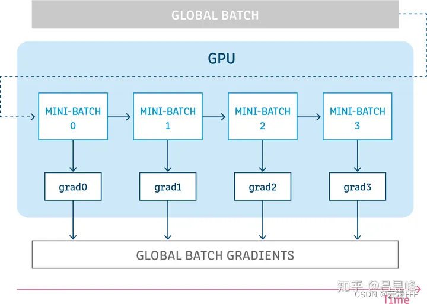
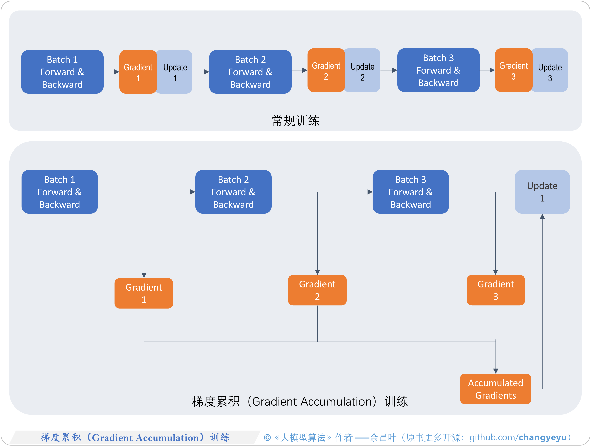
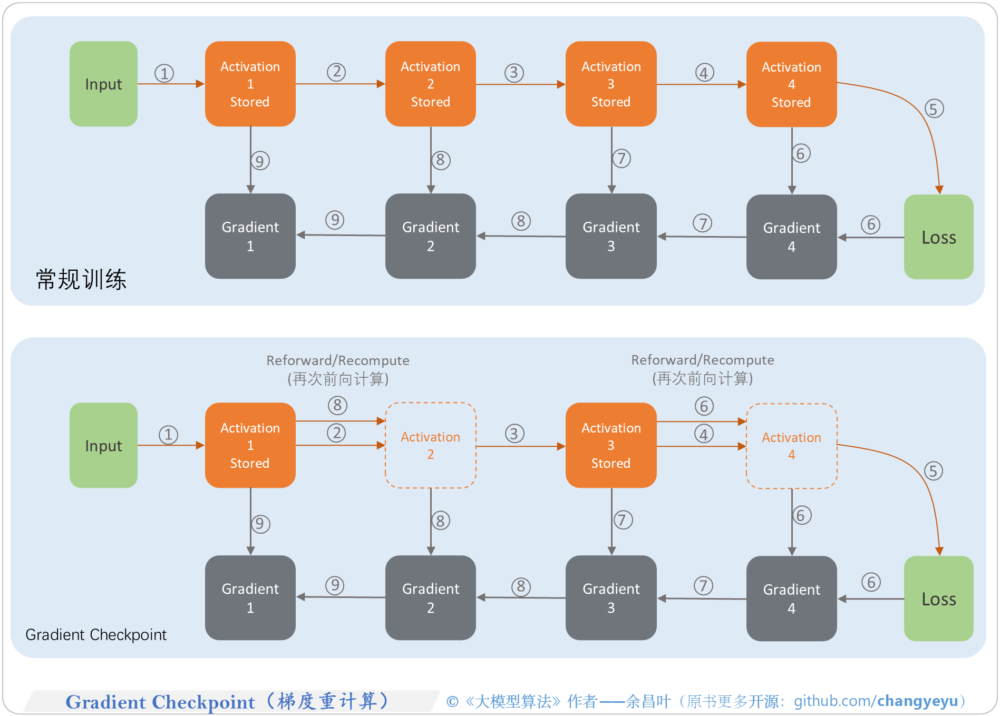
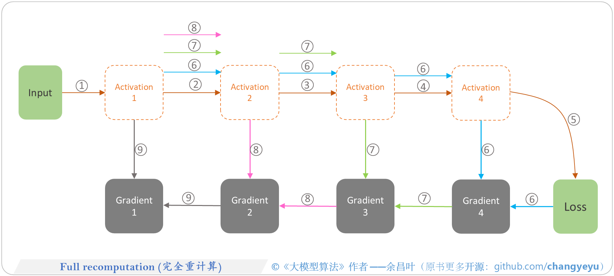

梯度优化 #
Gradient accumulation #


Gradient checkpointing [10] #
-
显存占用优化算法
- memory usage 与 computation time 之间的 tradeoff ；
-
gradient checkpointing
-
In deep neural networks, backpropagation requires storing intermediate activations for computing gradients during the backward pass.
-
但是当层数变多时，存储所有的中间层的激活值（intermediate activations）非常地占用显存；
-
gradient checkpointing
选择性地重新计算（recompute）一部分的 intermediate activations 在反向传播过程中来缓解显存的压力；
-


Gradient Clipping (梯度裁剪) #
目的[21] #
梯度爆炸问题的常见应对方式为“梯度裁剪”，也就是通过“clip”方式来防止迭代中梯度值过大。
两种常见形式[20] #
- 梯度范数裁剪（Gradient Norm Clipping）: 这种方法涉及计算所有参数梯度的范数（例如L2范数），如果这个范数超过了设定的阈值，就将梯度缩放到这个阈值以内。在PyTorch中，这可以通过 torch.nn.utils.clip_grad_norm_ 函数实现。
- 梯度值裁剪（Gradient Value Clipping）: 这种方法对每个参数的梯度值进行独立裁剪，确保它们不会超过一个设定的最大值或最小值。在PyTorch中，这可以通过 torch.nn.utils.clip_grad_value_ 函数实现。
参考 #
overview #
Performance and Scalability: How To Fit a Bigger Model and Train It Faster ***
gradient accumulation #
1xx. [LLMs 实践] 11 gradient accumulation 显存优化 trick v
[ LLMs 实践] 11 gradient accumulation 显存优化 trick
1xx. Pytorch入门（7）—— 梯度累加（Gradient Accumulation）
1xx. 聊聊梯度累加(Gradient Accumulation)
1xx. What is Gradient Accumulation in Deep Learning?
1xx. Performing gradient accumulation with Accelerate
gradient checkpointing #
gradient_checkpointing.ipynb
[LLMs 实践] 13 gradient checkpointing 显存优化 trick
Fitting larger networks into memory. *** 看动图
Backprop and systolic arrays.
Gradient Clipping #
https://github.com/pytorch/pytorch/blob/main/torch/nn/utils/clip_grad.py
1xx. 【深度学习】第6.2节 梯度裁剪